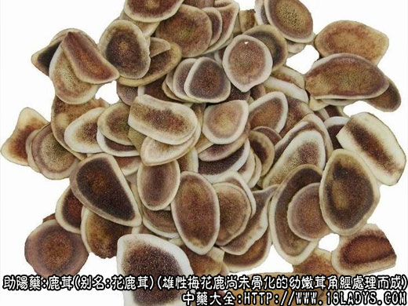

鹿茸为常用中药。始载《神农本草经》。现市售商品多数为花鹿茸和马鹿茸，此外部分地区还是用白唇鹿茸和水鹿茸。
鹿茸（角）生长概述：鹿种类甚多，角形和岔数不一，上述四种鹿，雌鹿无角，雄鹿均生双角。鹿角与牛羊角不同，为外无角质鞘，内无骨塞，每年脱换一次骨生骨化的分岔角。初生幼鹿当年不生角，只在头顶两旁生成效桃形突起的角基一堆，习称“草庄”。第二年春末夏初开始生角。幼角由草庄之上生出，外披毛茸，习称鹿茸。在茸角生长的同时，草庄与茸角的连接处生成一圈突起的疙瘩，习称“珍珠盘”。秋后毛掉皮脱，完全骨化，即为鹿角。转年老角脱换时连珍珠盘一并脱下，由草庄之上再生新茸。第一次生成的茸角至骨化脱落，不分岔，习惯称“锥角”，俗称“打鼓棒”或“一颗葱”。第二次生茸时开始分岔，主干习称“大挺”，由大挺上或由草庄上分生的第一侧枝。习称“人字角”；马鹿茸，习称“单门”。第三次生茸时分生第二侧枝。第二侧枝生出之后花鹿茸，白唇鹿茸，分三岔；马鹿茸因分生部位与其他鹿不同，紧靠们庄之上，习称莲花；水鹿茸至此截止，成为三岔定型角。第四次生茸分生第三侧枝，白唇鹿茸，习称四岔；花鹿茸至此截止，成为四岔定型角，因已近老化，习称毛角；马鹿茸则习称三岔。第五次生茸时分生第四侧枝，白唇鹿已成五岔定型角；马鹿茸则习称四岔。第六次只马鹿茸再分生侧枝，习称五岔，也已成为不再分岔的定型角。
采集加工：每年夏季在茸角生长旺期选锯。梅花鹿茸，水鹿茸以二杠、三岔为对象，成年梅花鹿茸每年可锯二杠两次，第一次在小满节前后；第二次在立秋节前后，第二次锯茸商品名再生茸。三岔则只能锯一次，时间在夏至前后。白唇鹿茸以“人字”、三岔为对象。马鹿茸以莲花、三岔或四岔为对象。锯下的茸角必须立即加工，先洗去表面的不洁物，用真空泵抽取大部分血液，无真空泵也可不抽，然后固定于特制的炸茸木架上，置沸水中反复烫炸多次，使茸内血液排尽，烘烤干燥即可。猎杀野鹿后锯下茸角或连头盖骨一并砍下，除采用沸水烫炸的方法外，还有的用炒米煨干或用浓盐水浸渍后，用盐泥糊起，吊通风处自然风干等方法。
1、花鹿茸
别名：梅花鹿茸、黄毛茸、毛茸。
来源：为鹿科动物雄性梅花鹿尚未骨化的幼嫩茸角，锯下或砍下经加工干燥而成。多为人工饲养。
产地：主产于东北，以及天津、北京等地，其他地区也有饲养。
性状鉴别：商品分初生茸、二杠、三岔、再生茸、砍茸。分述如下：
初生茸角，呈圆柱形或圆锥形，略弯曲，无分岔。长15～30厘米，直径2～3厘米。皮红棕色或棕色，密生黄棕色或浅灰色细毛茸基部锯口略圆形，黄白色或带血污色，外围显骨质化，中部呈海绵样孔隙，基部外壁略有骨钉，气微腥，味微咸。
二杠，大挺圆柱形，直立，长15～18厘米，直径3～4厘米，顶端钝圆饱满，向内放稍弯曲，习称“弯头”，或稍有皱缩。眉岔亦圆柱形，斜向前伸，长9～15厘米，直径2.5～3.5厘米。全形略如拇指与食指，作八字样分开。皮红棕色或黄棕色，密生黄棕色或淡灰色细毛茸。据口卵圆形，黄白色或淡褐色，外围有较薄的骨质；中部密布海绵样细孔，体轻如朽木。气味同上。
三岔，大挺略呈弓形弯曲，长20～30厘米，已分生第二侧枝，大挺及侧枝先端略尖而无弯头，下部外壁有纵棱线及微突起的疙瘩，习称“起筋”、“骨钉”。皮红棕色，毛茸较稀而稍粗，外围骨质较厚。其余与二杠略同。
再生茸，形于二杠相似，唯大挺不圆或下粗上细，无弯头，皮灰棕色，毛茸较稀而粗或生有较长的针毛，锯口外围骨质厚。外壁已有纵棱线。质坚重。其余与二杠略同。
砍茸，即带头盖骨的二杠或三岔，茸形及气味与二杠或三岔相同。
均以茸形粗壮，挺圆，顶端丰满，皮红棕色。毛黄棕色，细软，体轻者为佳。
2、马鹿茸
别名：马茸、青毛茸、草茸（四川）。
来源：为鹿科动物雄性马鹿尚未骨化的幼嫩茸角，锯下或砍下后经加工干燥而成。人工饲养或野生。
产地：主产于东北、西北、西南等地区，内蒙古也有生产。
性状鉴别：商品分东马茸和新疆马茸（包括西马茸），有锯茸与砍茸两种，又有单门、莲花以及三～五岔等不同茸形，现按茸质老嫩，结合分岔多少，以及皮毛的完整与残损等情况划分等级。马茸大体和花茸相似，但一般均较花茸粗长。东马茸（莲花）大挺一般长15～35厘米，直径约5厘米左右。皮红棕到棕褐色，毛茸灰色或灰黄色，细而光亮，基部锯口呈8字形，外围骨质薄厚不一，中部米黄色，有海绵样孔隙但不及花茸细密。分岔多则骨质愈厚，毛粗而疏，下部则有纵棱线生成。气微腥，味微咸。
新疆毛茸大挺长可达1米，直径可达7～8厘米。挺多不圆而带纵棱线或抽缩生生干及发头侧枝较长而弯曲。皮深灰色，毛茸灰黑色或灰色，粗糙，不光亮，锯口面多血污色，余与马茸相同。气微腥臭，味咸。
3、白唇鹿茸
别名：青毛茸、岩茸（四川）。
来源：为鹿科动物雄性白唇鹿尚未骨化的幼嫩茸角，锯下或砍下后经加工干燥而成。野生或人工饲养。
产地：主产于西藏、四川、青海、云南等地区的高原地区。
性状鉴别：本品除四川省定名为岩茸外，其他地区则作为马茸使用。与马茸的主要区别是：基部拔头高，在6～8厘米处分生第一侧枝，第二侧枝距第一侧枝甚远，约30厘米。大挺中上端及第二～四侧枝均呈扁圆形，皮灰褐色，毛茸较长，灰色或褐色顺逆零乱，其余与马茸相同。京津地区亦作马茸使用。
以上三种鹿茸均以茸形粗状，顶端饱满，皮毛完整，质嫩，无骨棱、骨钉，无臭味者为佳。
主要成分：含胶质、蛋白质；灰分含钙、磷、镁；且含极少量的女性卵胞激素。
药理作用：温肾壮阳、强筋健骨、生精益血。现初步证实其作用为：
1、促进发育生长；
2、促进造血功能；家兔服鹿茸粉后，红细胞、血红蛋白、网织红细胞数量增加。
炮制：燎净毛茸，切片。
性味：甘、咸、温。
功能：生精补髓，益血助阳，强健筋骨。
主治：一切虚损，头晕，耳聋，目暗，阳痿，滑精，腰膝无力，虚寒带下，崩漏等症。
临床应用：为峻补元阳的要药。从现代医学观点看，“元阳”实际上包括了生殖、生长等一些基本的生理功能。
1、用于兴奋性机能，治疗男子阳痿、女子虚寒白带、久不受孕。可能有性激素样作用。常配合山萸肉、熟地、杜仲、补骨脂、巴戟等，或配淫羊藿、阳起石等，也可配淮山药浸酒服。
2、用于促进生长发育，治疗小儿发育不良，筋骨萎软、行迟、齿迟、颅囟过期不合。这是肝肾不足所致，可在六味地黄丸基础上加鹿茸。
3、用于治疗严重贫血、精血两亏，取其活血而又带补血，有刺激造血功能作用。现代在治疗再生障碍性贫血时，试用鹿角胶配生地、当归、鸡血藤、牛角腮等，有一定效果。
4、用于治疗心脏衰弱，尤其风湿性心脏病而有心悸、腰酸尿量减少、小便艰涩者。可用鹿茸、冬虫草炖鸡（加少许生姜、南枣），对增强心力、改善血循环、减轻症状有帮助。
5、用于治疗神经衰弱或病后体衰，表现头晕、耳鸣、腰膝、精神不振、四肢乏力、消化不良、小便过多，鹿茸有强壮作用。
6、用于治疗崩漏属肾虚型者，配蒲黄、阿胶、当归、乌贼骨等，方如鹿茸散。
使用注意：1、发热、外感未清、平素阳盛壮实者均忌用；高血压病一般不宜服，但肾性高血压有眩晕和四肢麻木者，可配杜仲、牛膝、鸡血藤、山萸肉等同服。
2、鹿茸价昂难得，一般宜用鹿角霜或鹿角胶代，如代用后不见效，必要时再用鹿茸。
用量：1.5～3g以1.5g较常用。最多不超过4.5～6g，因多服易致鼻衄、头重。一般入丸散剂，也可另炖（每次0.9～1.5g），和其他药同服。
处方举例：鹿茸散（《千金方》）：鹿茸1.5g、当归9g、蒲黄6g、乌贼骨15g，共研细末，每次3g，每日1～2次，温开水送服。
注：
1、鹿茸切片后的等级划分：
一等花茸片：为鹿茸顶端的一段切成，切面平滑，无海绵样孔隙，胶质状，黄色或淡黄棕色如腊样光洁，外壁皮层较厚，棕褐色，体较重。习称腊片或血片。
二等花茸片：为上中段切成，切面白色或淡黄白色密布海绵样细孔隙，周围无骨质，外壁皮层略厚，棕红色，体轻松。习称粉片或细砂片。
三等花茸片：为中下段切成，切面黄白色或淡棕色。海绵样孔隙稍大，周围无骨质，外壁皮质略薄，棕红色，体亦轻松。习粗砂片。
四等花茸片：为最下段切成，断面黄棕色或血污色，海绵样孔隙较大，呈沙网样，周围已显骨化，外壁皮层薄，棕红色，体较硬。习称骨砂片。
马茸片亦分1～4等，分等情况，大致和花茸类似，不再详述。
2、此外尚有麋鹿、驼鹿以及雌雄均生茸角的驯鹿所生的茸角，未作鹿茸使用。按这些鹿生成的茸角，亦均为脱换骨生骨化角，与正文所述的三种鹿茸生成情况相同，只有角型及毛色的差异，但其所含成分，亦不外骨质、胶质、蛋白质等。为了使物尽其用，为人民保健事业服务，应给予研究利用。